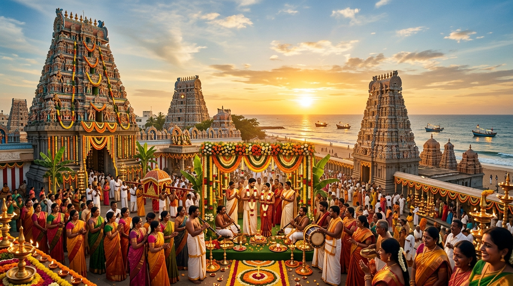

2015
2015
KCG College of Technology (Chennai)
Where college sparks first ignited. Between classroom lectures, canteen breaks, shared notes, and lively Chennai bus rides, a quiet companionship blossomed into something unforgettable.
Two Families · Two Coastal Heritages · One Eternal Bond
"From the bustling corridors of KCG College to rainy Chennai movie dates watching OK Kanmani, across freezing Canadian snowstorms and oceans apart... 11 years, two coastal souls, and one eternal love story."
— With the auspicious blessings of our beloved parents & families
Auspicious Wedding Muhurtham Countdown
Chennai Egmore ⇄ Tuticorin
Connecting Abu & Sachin's worlds since 2015.
2015
Where college sparks first ignited. Between classroom lectures, canteen breaks, shared notes, and lively Chennai bus rides, a quiet companionship blossomed into something unforgettable.
April 2015 at Satyam Cinemas. Watching Mani Ratnam's O Kadhal Kanmani with AR Rahman's magical score. The songs Mental Manadhil and Aye Sinamika became the timeless soundtrack of their young love.
 2017–2020
2017–2020
Steaming Mylapore filter coffees, evening sea breezes across Marina Beach and Napier Bridge, dream-building across the IT corridor, and countless overnight Pearl City train journeys between Chennai and Tuticorin.
 2021–2025
2021–2025
Crossing continents to Canada. Braving sub-zero snowy Toronto winters together with warm hugs and hot tea, watching red autumn maple leaves fall, building careers, and proving distance only deepened their commitment.
 2026
2026
The journey culminates in sacred matrimony. Two coastal families unite across Thoothukudi and Chennai. 11 years of devotion, endless train rides, and a lifetime of shared dreams ahead.
Honoring two rich traditions across Thoothukudi and Chennai. We invite you to join us for every sacred ritual, musical evening, and joyful feast.
Harbour Road, Thoothukudi, Tamil Nadu
Auspicious turmeric blessing, fragrant sandalwood paste, marigold showers, and joyful morning festivities by the sea breeze.
GRT Hotels, Palayamkottai Road, Thoothukudi
OK Kanmani retro hits, AR Rahman dance medleys, high-energy dhol, cocktails, and family choreography celebrating Abu & Sachin.
Beach Road, Near Harbour, Thoothukudi, Tamil Nadu
Sacred traditional vows, exchange of floral garlands, coastal family rituals, followed by an elaborate South Indian wedding feast (Elai Sappadu).
Mylapore Tank Road, Chennai, Tamil Nadu
Madras Vedic matrimonial rites, Nadaswaram & Thavil live Mangala Vaathiyam, Saptapadi, and authentic Mylapore filter coffee breakfast feast.
Adyar Seaface, MRC Nagar, Raja Annamalai Puram, Chennai
Grand banquet celebration overlooking the Bay of Bengal. Live orchestral melodies, dinner feast, and photo sessions with Abu & Sachin.
Please let us know which ceremonies you will be gracing with your attendance. We will prepare your personalized warm welcome!
Snapshots from an 11-year romance. Tap on any photo to expand, or use the empty frames to upload your favorite memory with Abu & Sachin!


Click or drop a photo here to add your Haldi moment with Abu & Sachin
Click or drop a photo here to capture the Leela Palace dance celebration
Everything you need to travel seamlessly between Chennai and Thoothukudi, along with curated accommodations near all venues.
Palayamkottai Road · 5★ Hospitality (Venue of Sangeet)
V.V.D. Road · Premium business luxury stay
Near New Bus Stand · Spacious family rooms
MRC Nagar · Sea-facing luxury (Reception Venue)
MRC Nagar · 3 mins drive from Reception
Club House Road, Anna Salai · Heritage 5★ elegance
Handpicked must-visit landmarks that capture the heart and soul of Abu's and Sachin's hometowns.
 Thoothukudi
Thoothukudi
Ancient 2,000-year-old coastal sanctuary where the soaring stone Gopuram overlooks crashing Bay of Bengal waves. One of the sacred Arupadaiveedu shrines.

ThoothukudiBreezy shoreline known for India's historic natural pearl diving legacy, shimmering salt pans, and sunset pier walks with cool ocean winds.
Thoothukudi
Tuticorin's iconic confection! Golden conical meringues crafted with egg whites and roasted cashews that melt on your tongue. Don't leave without a box!
Chennai
7th-century Dravidian architectural marvel in Mylapore. Follow morning darshan with a steaming brass davara tumbler of authentic degree filter coffee.
Chennai
The world's second-longest natural urban beach, paired with the iconic illuminated Napier Bridge over the Cooum estuary, famous for evening sundal and sea breeze.
UNESCO World Heritage site along the East Coast Road (ECR). 7th-century rock-cut monolithic rathas, Arjuna's Penance, and shore temples bathed in golden sunlight.
Dear Guest,
Selected Ceremonies:
Headcount: 2 Guests
Your presence brings boundless happiness to Abu, Sachin, and both our families as we celebrate 11 years of love.